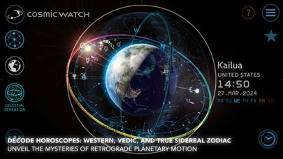
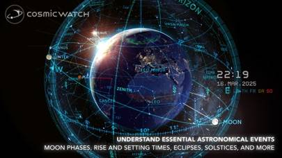
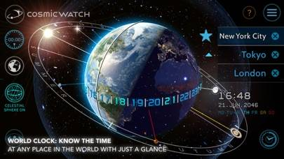
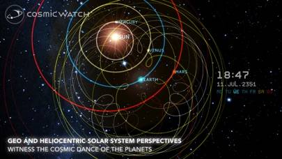
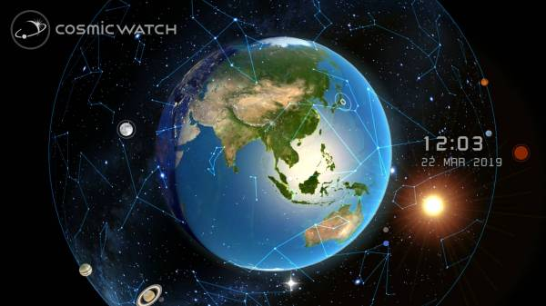
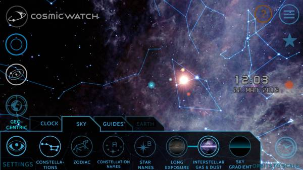
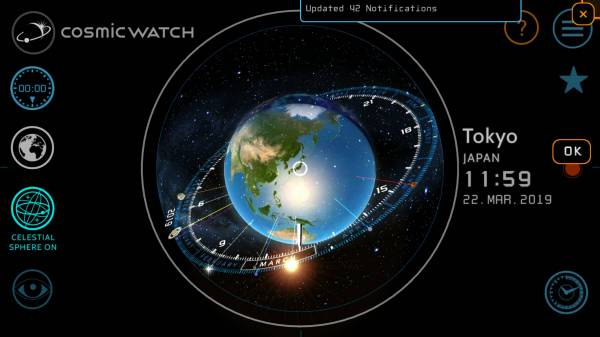
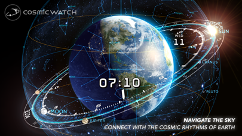

About cosmic WATCH
cosmic WATCHは、リアルタイムな宇宙で遊べる
高品質な3Dプラネタリウムアプリです。
このアプリは、教育ツールでもあり、
天文学と時間への遊び心あふれる入門書です。
スマホやタブレットを空に向けて、惑星、星、星座について学びましょう。
過去、現在、未来を旅して、時間が宇宙の動きとどのように関係しているかを発見できます。
あなたの知識を宇宙とともに広げていきましょう。




Feauture
美しい銀河や惑星が浮かぶ……
ずっと眺めたくなるマイプラネタリウム
ずっと眺めたくなるマイプラネタリウム
- 
3Dグラフィックで宇宙空間を表現
指でカメラを動かし、いろんな角度で眺めたくなります。
360度回して美しい背景を堪能してください。
リアルタイムで、どの惑星が地球上にあるか
宇宙視点で楽しめます。
- 
カスタム機能で好みのデザインを
設定メニューから、空の様子・惑星の軌道…等
さまざまな表示変更が可能です。
星座や銀河を表示させて神秘的に！
気分や用途に合わせてカスタマイズを楽しめます。
- 
実は占星術師からもアツい支持
占断で用いるホロスコープが3Dで見れるので、
cosmic WATCHを使う占星術師が増加中。
2Dで見るホロスコープとは、違った気づきがあるようです。
News
- 
- 2023/11/18 機能を大幅に追加したcosmic WATCH 2がリリースされました。日本語版もリリースに向けて開発中です。
- 2023/11/18 WIRED vol.100「今気になるアプリ50」に選出されました。スイス本社のオフィスツアーも掲載されています。
- 2023/11/18 日経トレンディ 12月号「2023年ベストバイ」にcosmic WATCHが選出されました。
More
Company
| 運営会社 | CELESTIAL DYNAMICS LTD |
|---|---|
| 事務所所在地 | c/o niu GmbH Guldinerweg 11 8047 Zürich |
| Mobile | +41 79 249 31 22 |
| markus@cosmic-watch.com |
Contact
お問い合わせ
cosmic WATCHについてのお問いわせは
こちらからお願いいたします。
※CELESTIAL DYNAMICS LTDは実際に存在します。
間違っても問い合わせしないようお願いいたします。
こちらからお願いいたします。
※CELESTIAL DYNAMICS LTDは実際に存在します。
間違っても問い合わせしないようお願いいたします。